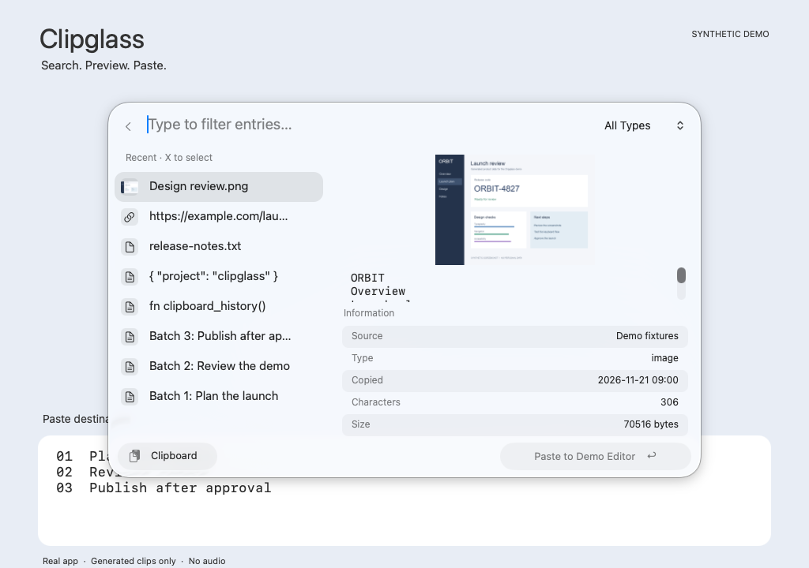

Privater Entwurf. Nichts veröffentlicht oder eingeplant.
Clipglass
README, Installation und Demo sind vorbereitet. Repo-Name, Lizenz und Veröffentlichung bleiben zur Freigabe offen.
Demo mit Testdaten
36 Sekunden, ohne Audio. Echte App in einer isolierten macOS-VM: OCR-Suche, Bild-Zoom, Code und Mehrfach-Paste.
MP4 öffnen · Testdaten und Aufnahme
Post-Entwurf
Built Clipglass, a native macOS clipboard manager in Rust.
Search text inside screenshots, zoom into image previews, and select several clips to paste in copy order. Local history, no account, no subscription, no webview.
Source + demo: [approved repository URL]
Link bleibt ein Platzhalter. Kein Post wurde gesendet oder geplant.
Installation aus dem Quellcode
macOS 26+, Rust, Xcode Command Line Tools und Python 3. Das Repo ist noch privat. Kein signierter Download.
git clone https://github.com/moritzWa/clip.git clipglass
cd clipglass
cargo build --locked
sh scripts/install.sh "$PWD/target/debug/clip"
Accessibility für Clip muss manuell aktiviert werden. Die History ist unverschlüsselt. Das Tastenkürzel ist derzeit fest an Command+Shift+physisches W gebunden.
Screenshot
